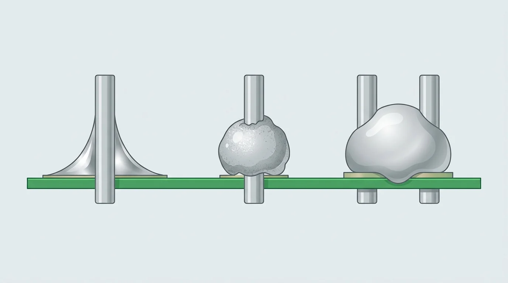

ซ้อมบน Perfboard
ใช้ลวดบัดกรีไร้ตะกั่ว ฝึกคนละ 4 จุด เทียบกับรูป แล้วให้ครูตรวจการแนบแพดและขาก่อนทำชิ้นงานจริง
ปลายหัวแร้งในตัวอย่างตั้งไว้ประมาณ 350 °C ให้ครูตั้งตามชนิดลวดและชิ้นงาน
ใส่ตลอดเวลาที่บัดกรีหรือตัดขาอุปกรณ์ เพื่อกันโลหะและเศษขากระเด็นเข้าตา
จับเฉพาะด้ามฉนวนเหมือนจับปากกา วางบนแท่นทุกครั้งที่พัก และวางก่อนลุกจากโต๊ะ
เปิดเครื่องดูดควันใกล้รอยต่อก่อนเริ่ม ให้ใบหน้าอยู่นอกแนวควันฟลักซ์ แม้ใช้ลวดไร้ตะกั่ว
เปิดแล้ว 1 จาก 3 ข้อ
ดูจุดที่ปลายหัวแร้งกับลวดบัดกรีแตะชิ้นงาน
เปิดแอนิเมชัน Soldering Lab 3Dกดชื่อรอยใต้ภาพ แล้วดูว่าลวดบัดกรีแนบขาและแผ่นทองแดงอย่างไร

ใช้ลวดบัดกรีไร้ตะกั่ว ฝึกคนละ 4 จุด เทียบกับรูป แล้วให้ครูตรวจการแนบแพดและขาก่อนทำชิ้นงานจริง
ถอด USB และแบตก่อนทำงาน ให้ครูตรวจรอยบัดกรีและขาที่อาจลัดวงจรก่อนจ่ายไฟ
ปิดหัวแร้ง วางบนแท่นให้เย็น แล้วล้างมือด้วยสบู่ก่อนกินของว่าง
ช่วงที่ 1 · 15 นาที “วันนี้ปลายหัวแร้งตั้งไว้ประมาณ 350 °C เปิดกฎทีละข้อก่อนจับด้าม ใส่แว่นตั้งแต่เริ่มจนตัดขาเสร็จ จับด้ามฉนวนและคืนแท่นก่อนลุกจากโต๊ะ เปิดเครื่องดูดควันใกล้ชิ้นงานแล้วหลบแนวควันฟลักซ์”
“ดูจังหวะจี้–ป้อน–ถอนครับ เช็ดปลายกับฝอยทองเหลืองและเคลือบปลายบาง ๆ จี้ให้โดนขากับแพดพร้อมกัน อุ่นสั้น ๆ ประมาณ 1–2 วินาทีในตัวอย่าง แล้วป้อนลวดที่รอยต่อ เมื่อไหลแนบทั้งสองด้าน ให้ถอนลวดก่อน ยกหัวแร้งตาม และวางชิ้นงานนิ่งจนรอยแข็งตัว”
“ตอนเทียบกับภาพให้ดูขอบรอยและผิวที่แนบกับแพด ถ้าเป็นก้อนหรือขอบยังลอยให้ครูช่วยดูวิธีอุ่นรอยต่ออีกครั้ง ถ้าโลหะเชื่อมขาข้าง ๆ ให้หยุดและให้ครูช่วยใช้ที่ดูดหรือสายซับตะกั่ว ผิวด้านอย่างเดียวพบได้ในรอยบัดกรีไร้ตะกั่ว”
ช่วงที่ 2 · 60 นาที “15 นาทีแรกซ้อมคนละ 4 จุด พอครูตรวจแล้วใช้ 45 นาทีที่เหลือทำ Pin Header ของ HTU21D, สาย Piezo และบอร์ดไฟ 5 V/GND ให้ครบ ยังไม่เสียบไฟจนกว่าครูจะตรวจ พอถึง 15:00 น. ปิดหัวแร้งและต้องล้างมือด้วยสบู่ก่อนกินของว่าง ช่วงพักถึง 15:15 น.”
อ้างอิง การดูดควันฟลักซ์ · ความปลอดภัยในการบัดกรี · ตัวอย่างรอยบัดกรี · ผิวของรอยไร้ตะกั่ว